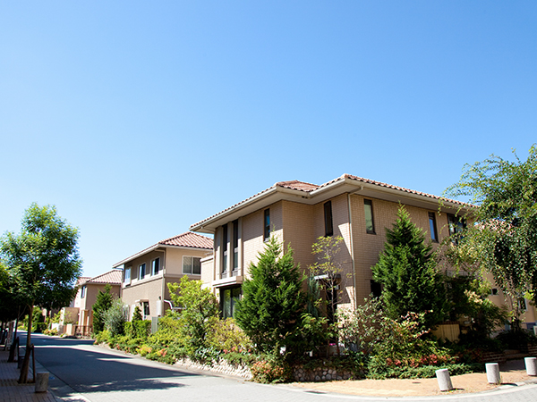
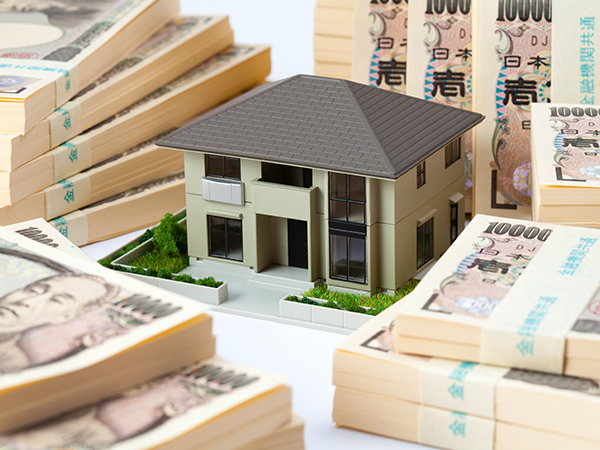

- TOP
- 不動産会社の選び方
不動産会社の選び方
不動産売却を成功させるコツは、売却についての基礎知識を押さえておくこと、そして不動産業者選びで失敗しないことです。こちらでは今治市の不動産会社「スクエア・プラス」が、不動産売却で気をつけるべきポイントをご説明します。
不動産売却は決して安い取引ではありませんので、売却方法によっては何十万円と損をしてしまうことも。売却のコツをおさえて、満足いく不動産取引を目指しましょう。ご不明な点があれば当社へお気軽にお尋ねください。
信用できる不動産会社の選び方
POINT（1） 地元をよく知る地域密着の会社かどうか
今やインターネットを利用すれば何でも済ませられる時代。不動産売却の査定もインターネットだけで済ませることも可能です。とはいえ、ホームページで一見よさそうな会社に思われても、遠方の会社に売買を任せてしまってよいのでしょうか？
お客様の大切な不動産の売却ですから、やはり地元の不動産事情を熟知し、実績や経験が豊富な会社に依頼するほうが安心です。地域密着の会社だからこそ、地域の不動産の魅力を知り尽くし、最適な売り方をよく知っているからです。
査定額がよかったとしても、遠方の会社の場合には、どうしても営業担当者の対応が鈍くなってしまいます。また売却活動の進み具合も、お客様自身の目で確かめることが難しくなります。さらに、売却後に何かトラブルが起こったときの対応も心配です。
その点、地域密着の不動産会社であれば、地元ならではの不動産ネットワークによって売却先を探すのもスムーズです。今治地域密着の不動産会社「スクエア・プラス」は、地域事情に合わせた提案力に自信があります。今治の不動産売却はぜひ当社へお任せください。

POINT（2） 高額査定にはご注意を！
不動産売却を進める際、最初に行うのは査定です。査定とは「これくらいの価格なら売れそう」という価格を不動産会社に見積もってもらうこと。一般的には数社の不動産会社に依頼しますが、一番高い査定額をつけてくれた不動産会社に売却を依頼してよいのでしょうか？
ここで注意したいのが、「不動産会社が査定額で売却してくれる約束をするわけではない」ということです。もちろん高い査定額のままで売れればうれしいですが、高すぎる査定によって買主が見つからず、結局売却価格を下げるしかないことも。
不動産には「このエリアで、これくらいの広さ、年数、状態の物件なら、これくらいの価格で取引される」という相場があります。したがって、市場の相場とかけ離れた査定額を出してくる会社には注意しましょう。
今治の不動産会社「スクエア・プラス」は、地域ならではの事情にも熟知しており、適正な査定額の算出に自信を持っています。

POINT（3） 売主の状況や想いを聞いてくれるかどうか
お客様にとって大切な不動産を売却するのですから、売主様お一人ひとりに想いがあるはずです。「できるだけ早く売却したい」「少しくらい時間がかかってもいいから納得できる価格で売りたい」などのご要望によって売却方法は変わってきます。
しかし残念なことですが、不動産会社の中には、会社の事情で売却活動を進めてしまうところも少なくありません。「これくらいの価格でしか売れませんよ」「今すぐ売りましょう」など、強引な売却を迫ってくる会社には要注意です。
何より、売主様の状況や売却に対する想いなどをしっかりヒアリングしてくれる不動産会社を選びましょう。その上で、現在の市場の状況や物件の状況なども反映した最適な活用方法や提案を行ってくれる会社であれば安心です。
今治での不動産売却に経験が豊富な「スクエア・プラス」であれば、お客様の状況や要望に合わせたご提案が可能です。決して無理な売却をおすすめすることはありませんので、お気軽にご相談ください。
売却方法には2つの手段！「仲介売却」と「不動産買取」の違いとは？
売却方法には大きく分けて、「仲介売却」と「不動産買取」という2つの方法があります。仲介売却とは不動産を買いたい人を市場で見つける売却方法です。一方の不動産買取は、不動産をすぐに現金化したいときに有効な手段です。
どちらも不動産を売却するという意味では変わりませんが、仲介売却と不動産買取とでは、「事例」や「買主」「期間」「価格」「仲介手数料」が異なります。大きな違いを表にしてご説明します。
※表は左右にスクロールして確認することができます。
PICK UP!不動産売却に失敗するパターンとは？
不動産売却は高額な取引になりますから、誰もが失敗したくないと思うもの。そこで売却を成功させるために、あらかじめ失敗例を知っておくことも役に立ちます。過去の失敗例を知っておくことで、失敗を避けることにつながるでしょう。
こちらでは不動産売却に失敗するパターンとして2例をご紹介します。お客様の売却を成功させるために、ぜひ過去の失敗例を参考にしてください。
不動産売却に適した時期を外す
不動産売却では、売主様の都合だけでなく、買う側のことも考えなければいけません。売却に適した時期を外してしまうと、売却活動が長期化したり、最悪の場合値引きが必要になったりすることもあるからです。
不動産事情において一般的には、春（1～3月）と秋（9～11月）がよく売買される時期です。この時期を念頭に置いて売却しないと、売却活動が長期化してしまう恐れがあります。また、物件引き渡し後の譲渡税については、5年以内か5年超かによって差額が発生します。
不動産は「売却したい」と考えても、今日の今日、売却できる商品ではありません。売却前に査定をしてもらったり、不動産会社を選んだりといった時間も必要になります。売却のタイミングを逃さないためにも、余裕をもったスケジュールを立てておく必要があるのです。
相場を調べないまま売却活動を始める
お客様にとっては愛着のある大切な不動産ですから、できるだけ高く売却したいとお考えのことでしょう。しかし売却には購入する相手があります。勝手に売りたい価格を決めても、その価格で購入してもらえるわけではありません。
不動産価格には市場相場というものがあります。いくら高く売りたくても、周辺の不動産相場とかけ離れた価格で売却することはできません。このため、売却活動を始める際には周辺相場を調べておく必要があります。
相場を調べておくことは、不動産会社を選ぶ際にも役立ちます。相場とかけ離れた査定額を提示する会社や、逆に、相場よりも安く提示してくる会社に不動産売却を依頼するのは心配です。相場価格に見合った適正な査定を示してくる会社に売却を依頼しましょう。
今治の不動産会社「スクエア・プラス」は地域密着で、地元今治の不動産相場を熟知している会社です。不動産業界に携わって20年以上の代表が、売主様に最適な提案に努めております。失敗しない不動産売却のパートナーとして、ぜひ当社をお選びください。
スクエア・プラスでは豊富な不動産売却メニューをご用意しています。
売主様のご都合に最適な売り方をお選びください。
今治での不動産売却なら、スクエア・プラスにお任せください。
経験豊富な代表の知識やノウハウを活用し、売主様に最適なご提案を行います。